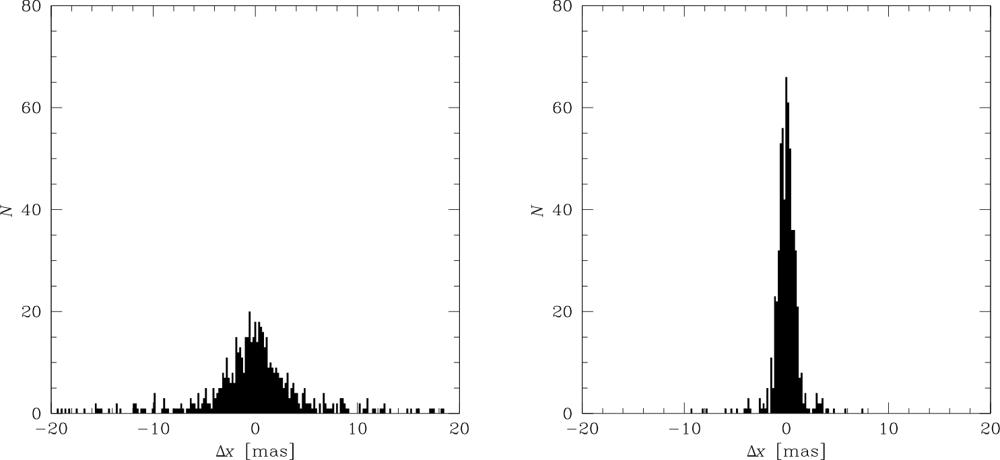

Measurements performed through a window function (an envelope) do not have many of the drawbacks of isophotal measurements.
SExtractor implements “windowed” versions for most of the measurements described in the previous section:
Note
Unless otherwise noted, all parameter names given below are only prefixes. They must be followed by _IMAGE if the results shall be expressed in pixel coordinates or _WORLD, _SKY, _J2000 or _B1950 for WCS coordinates (see Positions and shapes).
Isophotal parameters
Equivalent windowed parameters
X, Y
XWIN, YWIN
ERRA, ERRB, ERRTHETA
ERRAWIN, ERRBWIN, ERRTHETAWIN
A, B, THETA
AWIN, BWIN, THETAWIN
X2, Y2, XY
X2WIN, Y2WIN, XYWIN
CXX, CYY, CXY
CXXWIN, CYYWIN, CXYWIN
The computations involved are roughly the same except that the pixel values are integrated within a circular Gaussian window as opposed to the object’s isophotal footprint.
The Gaussian window is scaled to each object; the Gaussian FWHM is the diameter of the disk that contains half of the object flux (\(d_{50}\)).
Note that in double-image mode (§[chap:using]) the window is scaled based on the measurement image.
This is an iterative process.
Computation starts by initializing the windowed centroid coordinates \(\overline{x_{\tt WIN}}^{(0)}\) and \(\overline{y_{\tt WIN}}^{(0)}\) to their basic \(\overline{x}\) and \(\overline{y}\) isophotal equivalents, respectively.
Then at each iteration \(t\), \(\overline{x_{\tt WIN}}\) and \(\overline{y_{\tt WIN}}\) are refined using:
and \(s_{\tt WIN} = d_{50} / \sqrt{8 \ln 2}\).
Process stops when the change in position between two iterations is less than \(2\times10^{-4}\) pixel, a condition which is achieved in about 3 to 5 iterations in practice.
Although they are slower, it is recommended to use whenever possible windowed position parameters instead of their isophotal equivalents; the measurements they provide are generally much more accurate (Fig. 6).
The centroiding accuracy of XWIN_IMAGE and YWIN_IMAGE is actually very close to that of PSF-fitting on focused and properly sampled star images. Windowed measurements can also be applied to galaxies.
It has been verified that for isolated objects with Gaussian-like profiles, their accuracy is close to the theoretical limit set by image noise [1].

Fig. 6 Comparison between isophotal and windowed centroid measurement residuals on simulated, background noise-limited images.
Left: histogram of the difference between X_IMAGE and the true centroid in x.
Right: histogram of the difference between XWIN_IMAGE and the true centroid in x.
Windowed position uncertainties are computed on the image data once the centering process of the windowed centroid has converged.
Assuming that noise is uncorrelated among pixels, standard error propagation applied to (27) writes:
Semi-major axis ERRAWIN, semi-minor axis ERRBWIN, and position angle ERRTHETAWIN of the \(1\sigma\) position error ellipse are computed from the covariance matrix elements \({\rm var}(\overline{x_{\tt WIN}})\), \({\rm var}(\overline{y_{\tt WIN}})\), \({\rm cov}(\overline{x_{\tt WIN}},\overline{y_{\tt WIN}})\), similarly to the isophotal error ellipse:
The FLAGS_WIN catalog parameter flags various issues which may happen with windowed measurements (see the Flagging section for details on how flags are managed in SExtractor):